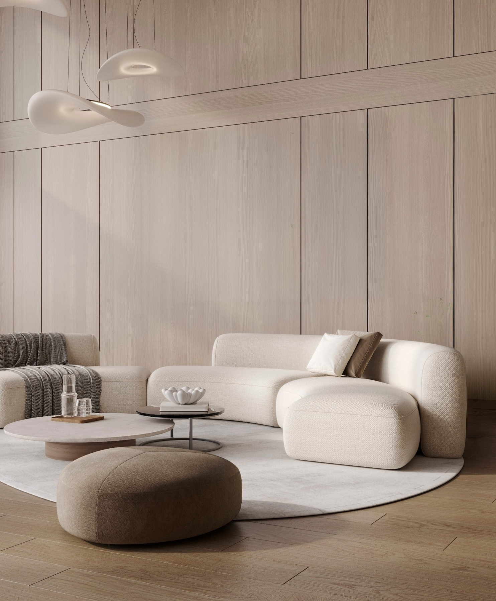

Quiet forms.
Everyday comfort.
Warm walnut, soft upholstery and a simple architectural language. Furniture with a considered place in everyday life.
Curved edges, generous proportions and a palette that lets the materials speak. Explore a collection conceived around the way a room feels.
Meet the Aurea Lounge Chair →